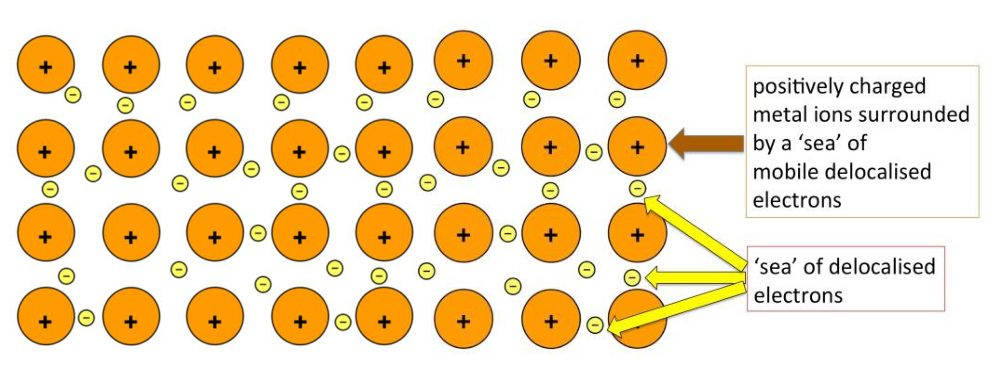
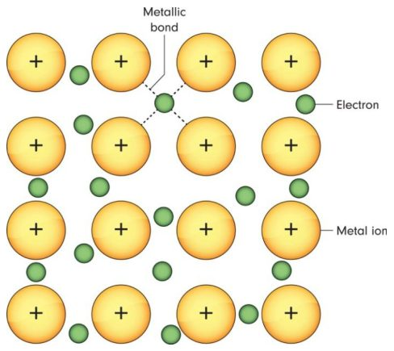
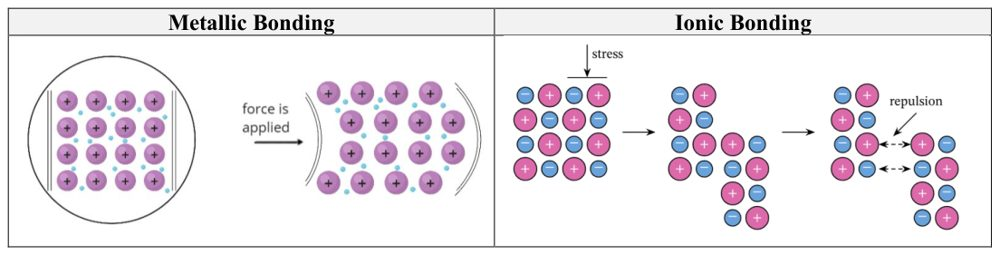

4.1 The Properties of Metals
Metals have a regular three-dimensional lattice of positive metal ions surrounded by a "sea" of delocalised electrons. The electrons come from valence electrons that detach from their atoms, leaving positive ions behind. The delocalised electrons are not bound to any one atom and move freely through the lattice.
The strong attraction between the positive ions and the delocalised electrons is called metallic bonding, and it holds the lattice together. Its strength depends on the charge of the ions and the number of delocalised electrons, which affect strength, conductivity and melting point.

Compared with metals, non-metals typically have lower melting and boiling points, are poor conductors and are brittle.
| Property | Explanation |
|---|---|
| Lustre | Shiny, because the free-moving electrons reflect light |
| High melting and boiling points | The strong metallic bonds need a lot of energy to break |
| Electrical conductivity | Delocalised electrons move freely through the structure, carrying charge |
| Thermal conductivity | Free electrons transfer heat energy quickly through the structure |
| Malleability | The regular layers of ions can slide over each other without breaking |
| Ductility | The ions can move relative to each other, so metals can be drawn into wires |
| Hardness | Resistance to scratching, cutting or denting; depends on the strength of the metallic bonds |
| Strength | Ability to withstand loads without deforming or breaking; due to the strong attraction between ions and delocalised electrons |
| Density | Atoms are closely packed in a regular arrangement, giving a high mass per volume |
4.2 Metallic Bonding
Metallic bonding occurs in metals: atoms are packed in a regular lattice, and each donates one or more outer electrons to a shared "sea" of electrons free to move throughout the structure.
- Delocalised electrons: metals have low ionisation energies (the energy needed to remove an electron), so their outer electrons escape individual atoms and flow around the lattice.
- Positive metal ions (cations): the atoms that lost electrons, surrounded by the electron sea, which acts like glue.
- Strong electrostatic attraction between the electrons and the positive ions holds the metal together.
- Lattice structure: the ions are in a regular repeating pattern; they are held by the electron sea but can slide past each other.


It is the delocalised electrons that move and carry charge. A higher ion charge means stronger attraction (and usually more delocalised electrons), so the bonding gets stronger.
Test your understanding
- What is metallic bonding, and what is the role of delocalised electrons?
- Why do metals have high melting and boiling points?
- Name three physical properties of metals and explain how their structure gives them these properties.
- Metallic bonding is the electrostatic attraction between positive metal ions and a sea of delocalised electrons. The delocalised electrons hold the ions together like glue and are free to move.
- The metallic bonds are strong, so a lot of energy is needed to overcome the attraction between the ions and the electrons.
- E.g. conductivity (free-moving delocalised electrons carry charge and heat); malleability (layers of ions slide without breaking the bonding); lustre (free electrons reflect light).
- Draw and label a metallic lattice.
- Why can metals be hammered into shapes, but ionic compounds shatter when hit?
- A regular grid of circles labelled positive metal ions (+), with many small e− symbols scattered between them labelled sea of delocalised electrons.
- In metals the layers of ions slide over each other and the delocalised electrons keep the attraction in every position. In ionic compounds, moving the layers brings like charges together; they repel, and the lattice breaks.
- If a metal cation's charge increases from +1 to +2, what happens to the strength of metallic bonding? Why?
- Why are metals good conductors of electricity?
- Which property lets metals be drawn into wires, and why does this happen at the atomic level?
- What is the main difference in electron movement between metallic and ionic bonding? How does it affect their properties?
- Why are metals denser than non-metals?
- It gets stronger: there is a greater attraction between the 2+ ions and the delocalised electrons, and each atom contributes more electrons to the sea.
- The delocalised electrons are free to move through the lattice, so they carry electric charge when a voltage is applied.
- Ductility: the ions can move relative to each other (layers slide) without the metallic bonding breaking.
- In metals the electrons are delocalised and free to move; in ionic compounds electrons are transferred and then held in fixed ions. So metals conduct when solid and are malleable; ionic solids don't conduct (unless molten or dissolved) and are brittle.
- Metal atoms are closely packed in a regular lattice, so there is a lot of mass in a small volume.